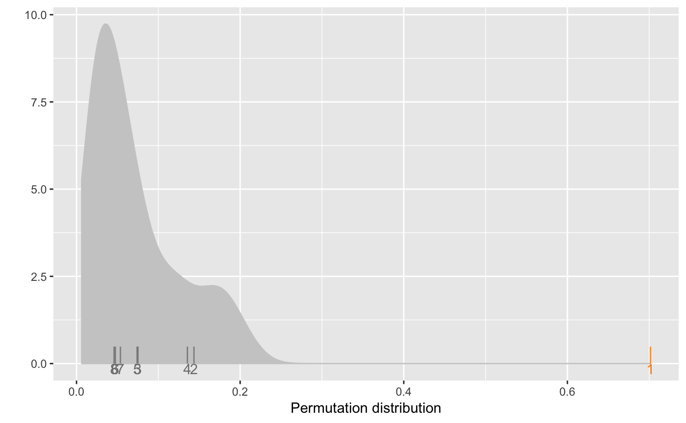
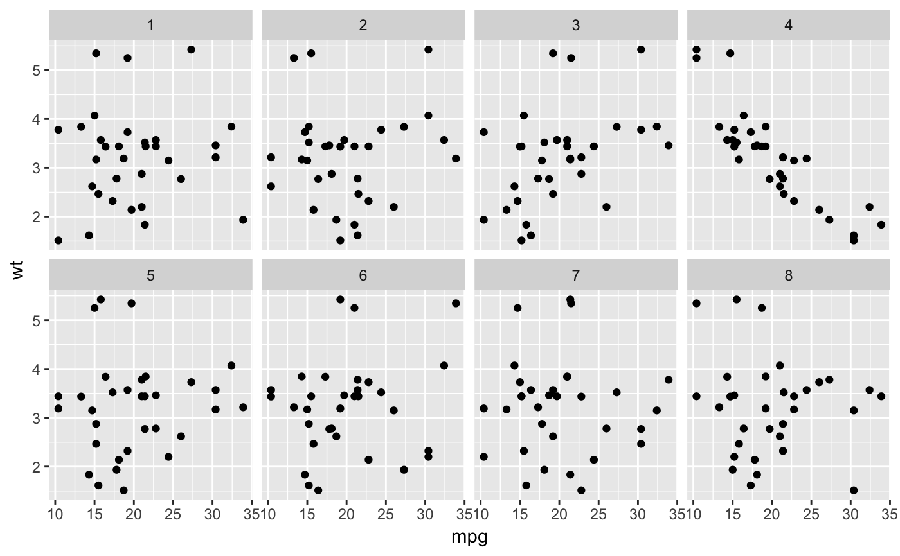
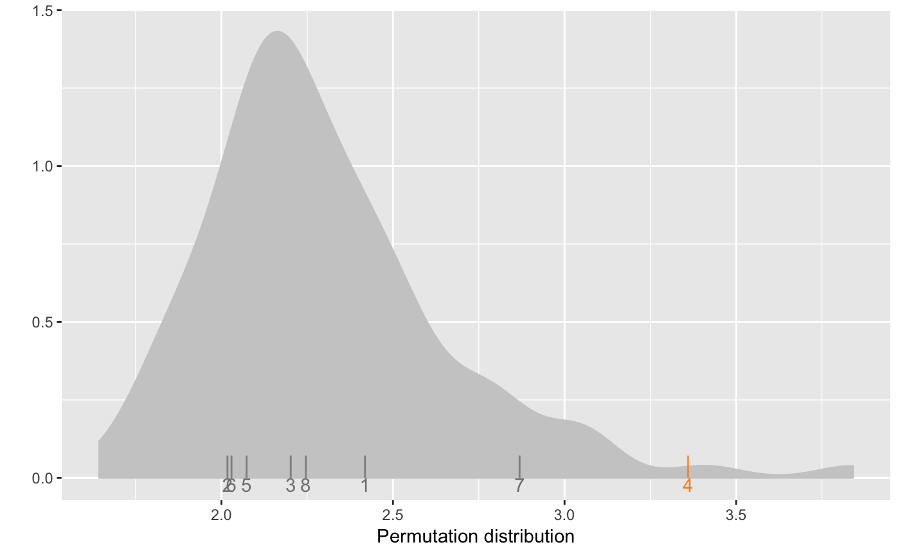

The empirical distribution of the distance measures is calculated based on the mean
distance of each of the null plots from the other null plots in a lineup. At this moment
this method works only for null_permute method. This function helps get some
assessment of whether the actual data plot is very different from the null plots.
distmet(lineup.dat, var, met, method, pos, repl = 1000, dist.arg = NULL, m = 20)
| lineup.dat | lineup data |
|---|---|
| var | a vector of names of the variables to be used |
| met | distance metric needed to calculate the distance as a character |
| method | method for generating null data sets |
| pos | position of the observed data in the lineup |
| repl | number of sets of null plots selected to obtain the distribution; 1000 by default |
| dist.arg | a list or vector of inputs for the distance metric met; NULL by default |
| m | the number of plots in the lineup; m = 20 by default |
lineup has the data used for the caulations
null_values contains new null samples from which to compare nulls in lineup
diff difference in distance between nulls and actual data and that of the null that is most different from other nulls. A negative value means that the actual data plot is similar to the null plots.
closest list of the five closest nulls to the actual data plot
pos position of the actual data plot in the lineup
# Each of these examples uses a small number of nulls (m=8), and a small number of # repeated sampling from the null distribution (repl=100), to make it faster to run. # In your own examples you should think about increasing each of these, at least to the defaults. if (require('dplyr')) { d <- lineup(null_permute('mpg'), mtcars, pos = 1) dd <- distmet(d, var = c('mpg', 'wt'), 'reg_dist', null_permute('mpg'), pos = 1, repl = 100, m = 8) distplot(dd, m=8) }d <- lineup(null_permute('mpg'), mtcars, pos=4, n=8) ggplot(d, aes(mpg, wt)) + geom_point() + facet_wrap(~ .sample, ncol=4)if (require('dplyr')) { dd <- distmet(d, var = c('mpg', 'wt'), 'bin_dist', null_permute('mpg'), pos = 4, repl = 100, dist.arg = list(lineup.dat = d, X.bin = 5, Y.bin = 5), m = 8) distplot(dd, m=8) }# Example using bin_dist# NOT RUN { if (require('dplyr')) { d <- lineup(null_permute('mpg'), mtcars, pos = 1) ggplot(d, aes(mpg, wt)) + geom_point() + facet_wrap(~ .sample, ncol=5) dd <- distmet(d, var = c('mpg', 'wt'), 'bin_dist', null_permute('mpg'), pos = 1, repl = 500, dist.arg = list(lineup.dat = d, X.bin = 5, Y.bin = 5)) distplot(dd) } # }# Example using uni_dist# NOT RUN { mod <- lm(wt ~ mpg, data = mtcars) resid.dat <- data.frame(residual = mod$resid) d <- lineup(null_dist('residual', dist = 'normal'), resid.dat, pos=19) ggplot(d, aes(residual)) + geom_histogram(binwidth = 0.25) + facet_wrap(~ .sample, ncol=5) if (require('dplyr')) { dd <- distmet(d, var = 'residual', 'uni_dist', null_dist('residual', dist = 'normal'), pos = 19, repl = 500) distplot(dd) } # }